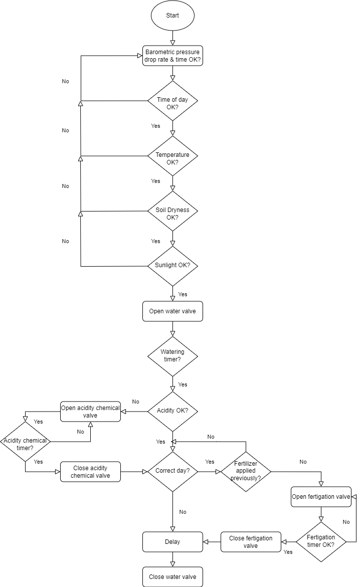
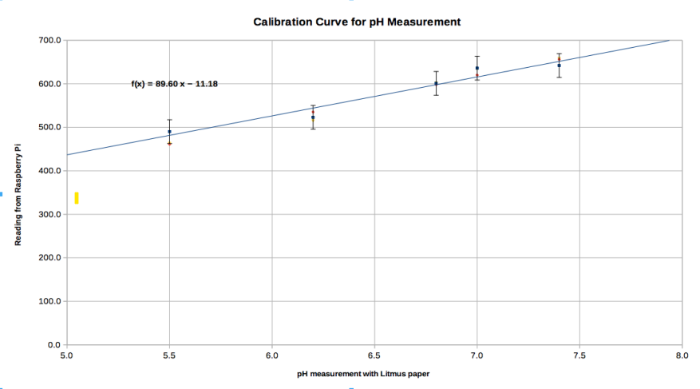
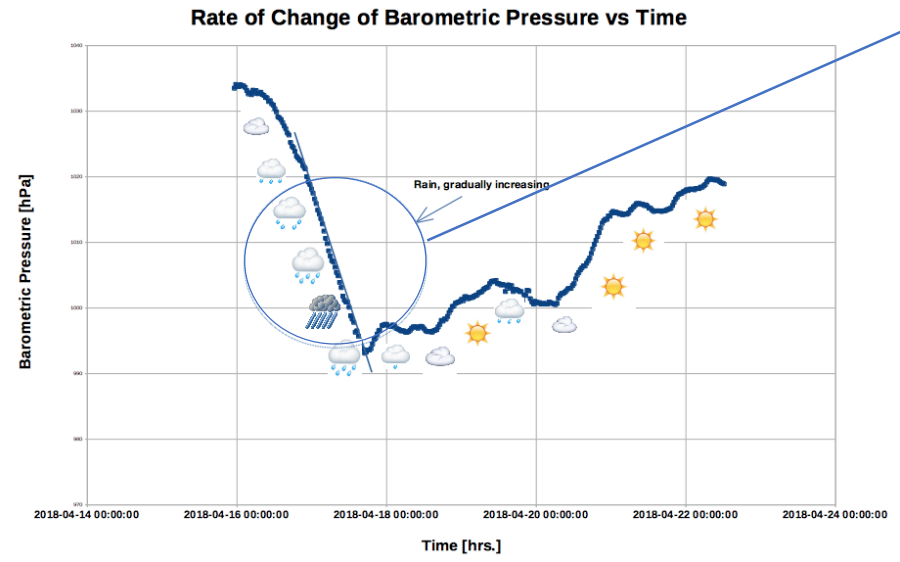
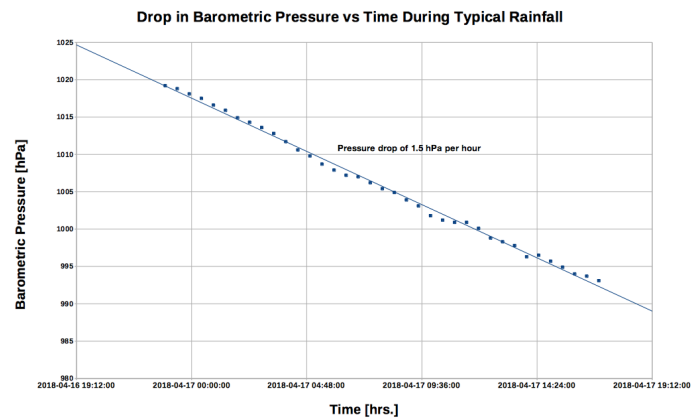

Smart Irrigation System
I created an 'Intelligent Irrigation System' in 2018, capable of watering, fertigating, and adding acidity control chemicals to crops only at optimal conditions so as to save on resource consumption. My motivation to create the device came about after reading that only one third of the three percent of water on the planet is available to us for consumption — the rest is salt water or freshwater stuck in glaciers. I thought: as time goes on and as our population increases, efficient irrigation methods must be implemented to help avoid water scarcity, hunger, dead crops, and fertilizer runoff. Of course, I also wanted to take this project as a way to evolve my electronics and coding skills. Ultimately, this project led me to compete in the Canada Wide Science Fair, coming home with a bronze medal.

Hardware
- Sensor box & Main electronics box
- Raspberry Pi 3
- Electromagnetic solenoid relays
- GPIO expansion board
- ADS1015 12-bit 4 channel Analog to Digital Converter
- DS18B20 digital temperature sensor
- BMP280 barometric pressure sensor
- Copper pole analog moisture sensor
- Aluminum pole analog pH sensor
- Signal amplifiers
- Photovoltaic cell
Software
Code was written in Python using Python IDLE 3 as an interface. It used five parameters to tell when to optimally water, fertigate and add an acidity chemical: sunlight, soil moisture, pH, barometric pressure and temperature. The set of optimal environmental conditions can be changed based on the environment itself, and plant needs. This allows the intelligent irrigation system to be applied to any type of plant, anywhere in the world.
Waters when the following factors are met:
- Time of day is optimal for most plant cultures (mornings or evenings)
- Sunlight is not at peak daily intensity (causing plant pores to close and inefficient absorption of water and nutrients)
- Soil temperature is appropriate
- Barometric pressure is not dropping at a rate that hints at likely rainfall
Fertigating when:
- The day of the week is the same as pre-defined
- Fertilizer has not been recently added today
Adding calcium carbonate (CaCO3) when:
- The pH value of the soil is met (based on the plant)

Collecting Data
Certain measurements had to be collected for calibration purposes, namely pH and barometric pressure. Collecting barometric pressure data over time was used as a way to tell whether or not it was going to rain, so as to avoid overwatering. It was found that the rate of pressure drop was about 1.5 hPa per hour if it was going to rain. The graph on the bottom right is a more detailed version of the rather fast pressure drop in the middle graph. Using litmus paper, I calibrated the pH parameter and obtained readings from the aluminum pole.



Future Development
- Waterproofing
- Developing a HMI/GUI (application or a website) to allow the user to track their crops and make any necessary changes
- Add solar panels instead of an electrical power supply
- Creating a PCB